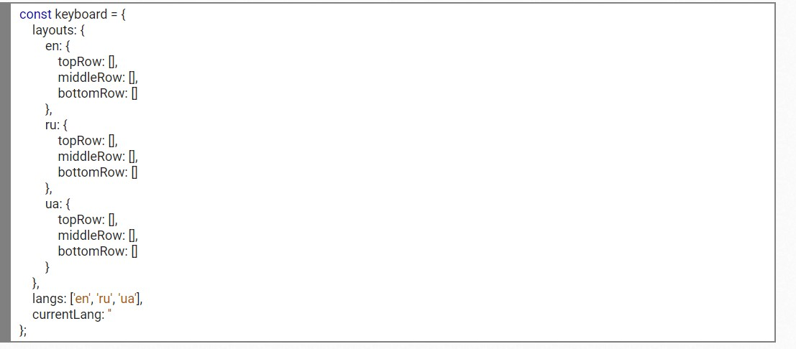

Модуль 5 - Домашнее задание
Массив строк клавиатуры из прошлого модуля преобразовать в объект keyboard следующего формата.
-
поле
layoutsсодержит обьекты раскладок языков, в каждом из которых по 3 массива строк клавиатуры -
поле
langsсодержит массив доступных языков -
поле
currentLangбудет содержать язык который сейчас выбран

Написать скрипт который на старте спрашивает пользователя какой язык он хочет использовать на тренажере. Это обычный prompt в котором написано en-0, ru-1, ua-2 . Пользователь вводит 0, 1 или 2, если введено другое значение то вывести alert о том что был выбран не доступный язык и повторить prompt до того момента пока не будет введено подходящее значание языка или нажат cancel . При cancel прекратить выполнение скрипта.
Результат выбора языка пользователем записать в обьект keyboard в поле currentLang как строку, 0 это en, 1 это ru, 2 это ua.
Модифицировать функцию getRandCharInAlph() так, чтобы она возвращала случайную букву из выбраного пользователем алфавита.